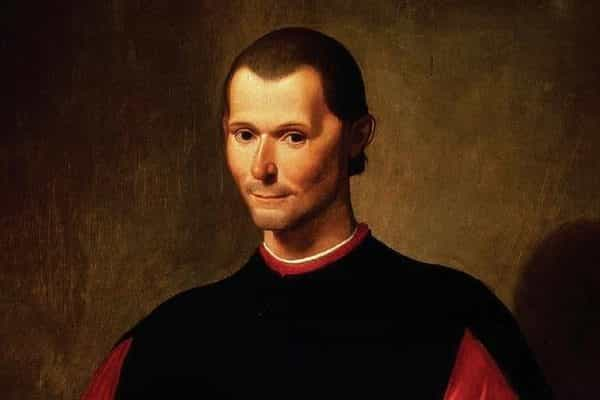

André is a young European who left his decaying country in 2012 for greener pastures. He enjoys exploring subterranean places, reading about a host of interconnected topics, and yearns for Tradition.


Power is a broad topic. Every important aspect of our lives is related to it. This is evident in game, where dominance must be obtained or simulated, and where females resort to shit tests, flaking, emotional blackmailing or apparent unpredictability, and this holds no less true in politics, culture, or economy. The reason why your job is offshored is that some have the power to take it away. Likewise, you want to work freelance or dip into a foreign country to take your life back from them and have a future again.
Power has many subtleties. It takes whole books to give it a slightly exhaustive coverage. Aside from real life experience, the student of power would be inspired to read history books on particular characters or periods, or pieces about contemporary economy, politics, and related themes, with a keen eye on who’s getting what. Those who hate us were doing it before we were born and their SJW heirs depart in a frenzy when we dare doing something as small as a public meeting.
However, dwelling too much on the side of particular events can lead us to lose sight of the essential. A proper sense of power of what others are actually doing and of what one can or could do is best trained by switching back and forth between minute stuff no one else may care about, masculine energy, and timeless meditations. Here I will dwell on the second element and mention several books well worth reading about power in general. This is the first of a two-parts piece, with the present one dealing with classical—yet not old—books and the next with more contemporary matter.
This work never turned old in 2500 years and is unlikely to age at all. Written as a long-winded dialogue, the Republic discusses justice, moral and political, and tackles related topics such as political systems and the proper virtues of a proper citizen. Through his mouthpiece Socrates, Plato answers various theories of justice he considers narrow or false, and ponders the fitness and goodness of various characters.
Although Greece fifth century B.C. was a mess of city-States, the context Plato writes from is rather refreshing. Greeks then were independent, versatile, and masculine. Respectable men in Athens gained the status of citizen and had their saying at the general meetings. Plato’s dialogues are infused with subtle, intelligent masculinity. They are an example of a time and place when citizens—not neutered “officials”—could routinely tackle complex yet relevant issues of their lives, and stand atop all noisy globalists who today pretend to discuss the same topics.
Plato’s Republic also contains pieces of anthology, such as the allegory of the cave, the myth of Er, or a discussion of how even a perfect city-state can degenerate into a mass of tyrant-ruled schlubs. Womanly shit tests are part of the degeneration process (see 549d-e).
A leading disciple of Plato, Aristotle was to grow dissatisfied with at least some of his master’s teachings. Once an adult, he would tackle similar topics from a slightly different angle and criticize some typically Platonic ideas—for example, that in a perfect city women and children may be shared. Less meditative, more practical-oriented than Plato, Aristotle would become just as influential as he, and both philosophers were to become a great complementary duo.
Aristotle’s Politics are a collection of loose treaties. The order of its parts are far from certain and still occasions scholarly debates. Nonetheless, what the philosopher had to say is mostly clear, and to someone who is not used to philosophy this may be an easier read than the lengthy Republic.
A keen observer of things, Aristotle managed to gather no less than 158 constitutions and charts, including one he had written himself, before he started penning Politics. The resulting output deals with various interrelated topics: the political communities from nuclear families to whole cities, the “natural” political systems and those that are merely the result of subsequent degeneration, who should be considered a citizen in the strongest sense and who should not.
Noteworthy parts include considerations on how the unions of men and women should be regulated (Politics, book VII, chap.16), on the causes of dissent among fellow citizens (book V, chap.2) or on the middle class (book VI, chap.11).

While the Politics deals with what is usually considered political, that is, what was deemed so before everything got weaponized or politicized, the Nichomachean Ethics covers more individual matters. Here Aristotle begins with a philosophical problem. Different people aim at different goods, and if asked what good and justice are, they will give mutually different, mutually exclusive answers. Does this mean that there is no essential good and that everything is relative? As mentioned above, Aristotle rejects this idea. He embarks on a quest to reconstitute a proper hierarchy of ends, so that different temperaments and aims all unite in one Sovereign Good.
The first book of the Ethics alone is worth getting a copy. Aristotle distinguishes action from production (free men act in the highest sense, slaves are devoted to making consumables), upholds those abilities, knowledge and other things that cannot be stolen matter most, and explains how a truly virtuous man can ride the flow of contingencies:
If activities are, as we said, what gives life its character, no happy man can become miserable; for he will never do the acts that are hateful and mean. For the man who is truly good and wise, we think, bears all the chances life becomingly and always makes the best of circumstances, as a good general makes the best military use of the army at his command and a good shoemaker makes the best shoes out of the hides that are given him. (Nichomachean Ethics, book I, chap.10)
Aristotle also expands the concept of arete, a word often translated as “excellence” or “virtue” but which also refers to the proper end or a thing or person. It could be said that Aristotelian arete is the Greek equivalent of a Hindu’s swadharma.
Beyond listing virtues and comparing characters, an exercise Aristotle seemed to enjoy, the Nichomachean Ethics develops several theses: for example, that courage is the necessary condition of all other virtues, for a coward never frees up situations where he can exert other virtues, or that happiness goes along with living virtuously. All in all, a meditation on power over oneself and others, on ends and on what a good life is.
Decades or centuries after Aristotle, an alleged Hindu royal adviser named Kautilya wrote what would become the greatest political treatise of India. Parts of its name meaning respectively external goods (artha) and written code or set of prescriptions (shastra), this book has been written for a king or sovereign.
The Arthashastra distills centuries of experience in the art of governing. It considers relevant aspects of sovereignty, necessary or possible situations, and many possible answers. Kautilya also discusses the advice of other counselors on the issues he examines.
Max Weber, impressed with this book, said it “put Machiavelli to shame.” I usually find Weber overrated and ambiguous, but on this particular case, he is right. Kautilya gives a thorough idea of what governing is like and should be thought of if one wants to maintain his course in tumultuous times. You do not need to own a kingdom to find value here. Reading the Arthashastra gives foresight, ideas for strategic planning, and helps to make sense of the seemingly unpredictable actions of others.
The only drawback with the Arthashastra is its length. The 1915 English translation goes beyond 600 pages. On the other hand, no one said it would be easy. Especially worthy of attention to us are book I, which addresses “discipline” and examines issues such as the fatal flaws a sovereign should avoid or how to test other people; book VII, on possible configurations on the battlefield; and book XII, on what to do when under attack by a more powerful enemy.

The most famous book ever written about power, Machiavelli’s Prince—issued in 1532, almost at the time than Ignatius of Loyola created the Jesuit order (1534)—appears against a background of great turmoil. Italy was then fragmented into small republics and petty principalities, constantly warring against each other to triumph.
Born a Florentine, the nobleman Nicholas Machiavelli had the opportunity to carry out diplomatic missions and assist the very “Machiavellian” character, Cesar Borgia. He was also a devoted scholar of antique texts. These influences allowed him to put himself in his sovereign’s shoes and give him a corpus of advises to conquest all Italy.
Despite the target audience, The Prince seems to be written less from the standpoint of an established ruler and more for an adventurer than could be expected. Machiavelli explains how to take over a realm and keep it. He emphasizes how important reputation is, how to be appreciated, admired and feared, and what virtues are either useful or favorably judged. A sovereign should be wary of the courtiers who will flatter him to gain the upper hand. Machiavelli also dwells on various examples of non-obvious power situations, such as why the conquests of Alexander the Great did not rebel after his death or why some past rulers fared as they did.
Concise and short, The Prince may be more appealing than the works aforementioned. Those who have read the 48 Laws will notice obvious borrowings—for example, Machiavelli criticizes the use of fortresses and notice that rules of thumb have reversals. Yet, The Prince is also narrower in scope than the other works and I could not help but find it much less inspiring.
Now we approach recent times and it happens that many interesting or thought-provoking texts have been shelved. The Secret Rules, or Monita Secreta in original Latin, is an apocryphal piece allegedly written by a Jesuit priest during the XVIth century. As I have already devoted a whole piece to the Secret Rules, I won’t go much into detail here.
Described as a mixture of “Machiavelli and Saint Thomas”, which adequately expresses the major influences of the times, the Rules explains how a Jesuit should behave as to further his order’s interests. A Jesuit should care about getting a good reputation through selective care and virtue-signaling, have many cat’s paws among both the powerful and the humble, know how to extract wealth from a rich widow or scapegoat innocents when someone must bear the weight of a known—and Jesuit-done—misdeed.
Whoever wrote this book had understood how the Jesuits took a very earthly lemonade from a place where lemons should be spiritual. The Secret Rules is very short, and if you are a bit familiar with European history, you should go through it with ease.
Generations of sponsored historians worked hard so that you never dip into this one. (Latest example: French copywriter Pierre-André Taguieff, who published an entire book to digging up “anti-Semitic” dirt around the Protocols, has ties with Jewish Freemasonry.) Read this work and you will understand why.
The Protocols tackle contemporary topics such as the prevalence of a financialized economy, the uses of the mainstream media, the breakdown of the family unit and others from the alleged point of view of a cunning Jew speaking to his peers.
While the authorship of the book is an entangled issue (it is hard to think that people plotting how to take over the world would have let such an incriminating document behind), its content adequately describes many trends that would only show decades after it was written, and the similarity between what the Protocols describe and known fact is too important for them having been made up out of thin air.
Read Next: 6 Ways The Globalist Establishment Has Achieved Worldwide Supremacy